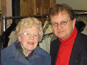

<!DOCTYPE html>
<html lang="en">
<head>
<meta charset="utf-8">
<meta name="viewport" content="width=device-width, initial-scale=1">
<title>Annual Report 2004  – Don Glendenning Archive</title>
<link rel="stylesheet" href="../../css/style.css">
<style>
.reader-content {
    background: var(--card-bg);
    border: 1px solid var(--card-border);
    border-radius: 8px;
    padding: 2rem 2.5rem;
    margin: 1.5rem 0;
    line-height: 1.8;
    font-size: 1rem;
}
.reader-content p { margin: 0.8em 0; }
.reader-content pre {
    white-space: pre-wrap;
    word-wrap: break-word;
    font-family: Georgia, 'Times New Roman', serif;
    font-size: 1rem;
    line-height: 1.8;
}
.reader-summary {
    font-style: italic;
    color: var(--muted);
    font-size: 0.92rem;
    margin-bottom: 1.5rem;
    padding-bottom: 1rem;
    border-bottom: 1px solid var(--card-border);
}
</style>
</head>
<body>

<header class="site-header">
  <h1 data-pagefind-meta="title">Annual Report 2004 </h1>
  <div class="subtitle">Community Foundation &amp; Civic Life</div>
</header>

<div class="container">

<div class="breadcrumb">
  <a href="../../index.html">Home</a> <span class="sep">›</span>
  <a href="../index.html">Community Foundation &amp; Civic Life</a> <span class="sep">›</span>
  Annual Report 2004 
</div>

<div class="reader-summary">CFPEI Annual Report for 2004 identifying Don Glendenning as Past President on the Board of Directors and noting his role on the Arts &amp; Heritage Stabilization Board. Reports $32,000+ in grants, successful proposal-writing workshops, and financial returns of 7.7%. Lists Dr. Donald &amp; Carol Glendenning and Janet Glendenning among donors, further documenting the family&#x27;s philanthropic engagement.</div>

<div class="reader-content" data-pagefind-body>
<span data-pagefind-filter="theme" data-pagefind-meta="theme" style="display:none">Community Foundation & Civic Life</span>

<!-- lo-images -->
<p lang="en-CA" style="margin-bottom: 0in; line-height: 100%">
<span id="Frame1" dir="ltr" style="position: absolute; top: 0.22in; left: 2.76in; width: 0.95in; border: none; padding: 0in; background: #ffffff"><p style="margin-bottom: 0in; line-height: 100%">
	
</p>
</span><br />

</p>
<p lang="en-CA" style="margin-bottom: 0in; line-height: 100%">
<br />

</p>
<p lang="en-CA" style="margin-bottom: 0in; line-height: 100%">
<br />

</p>
<p lang="en-CA" style="margin-bottom: 0in; line-height: 100%">
<br />

</p>
<p lang="en-CA" style="margin-bottom: 0in; line-height: 100%">
<br />

</p>
<p lang="en-CA" style="margin-bottom: 0in; line-height: 100%">
<br />

</p>
<p lang="en-CA" align="center" style="margin-bottom: 0in; line-height: 100%">
<b>The
Community Foundation of Prince Edward Island</b></p>
<p lang="en-CA" align="center" style="margin-bottom: 0in; line-height: 100%">
<b>Annual
Report - 2004</b></p>
<p lang="en-CA" align="center" style="margin-bottom: 0in; line-height: 100%">
<br />

</p>
<p lang="en-CA" align="center" style="margin-bottom: 0in; line-height: 100%">
<b>Suite 105, 119-121 Queen Street, Charlottetown, PE C1A 4B4</b></p>
<p align="center" style="margin-bottom: 0in; line-height: 100%">
<span lang="en-CA"><b>Tel: (902) 368 3440; Toll Free 1 800 566 7307;
Fax 892 0880; E mail </b></span></p>
<p lang="en-CA" align="center" style="line-height: 100%; margin-bottom: 0in">
<b>Charitable Numbers: Canada #: 890011190RR001, US IRS #:30-0050801</b></p>
<p lang="en-CA" align="center" style="margin-bottom: 0in; line-height: 100%">
<br />

</p>
<p lang="en-CA" align="center" style="margin-bottom: 0in; line-height: 100%">
<b>President’s
Message</b></p>
<p lang="en-CA" align="center" style="margin-bottom: 0in; line-height: 100%">
<i><b>A.
John Robinson</b></i></p>
<p lang="en-CA" align="center" style="margin-bottom: 0in; line-height: 100%">
<br />

</p>
<p style="margin-bottom: 0in; line-height: 100%"><span lang="en-CA"><i>	</i></span><span lang="en-CA">The
Community Foundation of Prince Edward Island (Foundation) is pleased
to report a great year of progress and development.  I would like to
make particular mention of several highlights: the completion of a
match grant program enabling the Foundation to present grants in
excess of $32,000; the implementation of the Island Arts &amp;
Heritage Stabilization Program; the addition of $106,520 in new
monies to our Funds Under Management; a Return On Investment of 7.7 %
for our funds under management, and the delivery of five Proposal
Writing Workshops to 58 Island Charitable Organizations, 96
participants and three Fund Raising Workshops to 35 Organizations, 41
participants.  The next few years will bring a renewed emphasis on
building endowments, community leadership, and telling others about
our services.</span></p>
<p lang="en-CA" style="margin-bottom: 0in; line-height: 100%">
	</p>
<p lang="en-CA" style="margin-bottom: 0in; line-height: 100%">
	Our achievement would not have been possible without the
encouragement and support of many people.  To the many donors,
advisors, volunteers, committee members, Directors, Executive
Director, I offer my sincere thanks to each of you for your time,
talent and money in support of charitable work in PEI.  The
Foundation continues to be a unique and strong organization committed
to improving the quality of life in Prince Edward Island</p>
<p lang="en-CA" align="center" style="margin-bottom: 0in; line-height: 100%">
<br />

</p>
<p lang="en-CA" align="center" style="margin-bottom: 0in; line-height: 100%">
<b>Board
of Directors</b></p>
<p lang="en-CA" align="center" style="margin-bottom: 0in; line-height: 100%">
<br />

</p>
<p style="text-indent: -1in; margin-left: 1in; margin-bottom: 0in; line-height: 100%">
<span lang="en-CA"><b>Executive:</b></span><span lang="en-CA"><b>
 	</b></span><span lang="en-CA">John Robinson, President        </span><span lang="en-CA"><b>
      </b></span><span lang="en-CA"><b>Directors:</b></span><span lang="en-CA">
     Hon. Norman Carruthers</span><span lang="en-CA"><b> </b></span>
</p>
<p style="text-indent: -4in; margin-left: 4in; margin-bottom: 0in; line-height: 100%">
<span lang="en-CA">		John Ives,  Vice-President</span><span lang="en-CA"><b>			
     </b></span><span lang="en-CA">  Alfred Fraser, QC</span></p>
<p style="text-indent: -4in; margin-left: 4in; margin-bottom: 0in; line-height: 100%">
<span lang="en-CA"><b>		</b></span><span lang="en-CA">Dr. Don
Glendenning, Past President		        Bruce Lewis</span></p>
<p lang="en-CA" style="text-indent: -4in; margin-left: 4in; margin-bottom: 0in; line-height: 100%">
		David R.Campbell, Treasurer			        Heather MacDonald</p>
<p lang="en-CA" style="text-indent: -4in; margin-left: 4in; margin-bottom: 0in; line-height: 100%">
		Margaret Ching, Secretary			        Anne Nicholson</p>
<p style="margin-bottom: 0in; line-height: 100%"><span lang="en-CA">								</span><span lang="en-CA">
       Elizabeth Noonan</span></p>
<p align="center" style="margin-bottom: 0in; line-height: 100%">
<span lang="en-CA"><b>Executive
Director</b></span><span lang="en-CA"><b>:  </b></span><span lang="en-CA">JoAnn
McQuaid </span><span lang="en-CA"><b>       </b></span>
</p>
<p lang="en-CA" style="line-height: 100%; margin-bottom: 0in">
<br />

</p>
<p style="margin-bottom: 0in; line-height: 100%"><span id="Frame2" dir="ltr" style="position: absolute; top: 0.04in; left: 3.16in; width: 3.28in; border: 2.25pt double #000000; padding: 0in; background: #ffffff"><p lang="en-CA" align="center" style="margin-bottom: 0in; line-height: 100%">
	<b>Foundation’s Vision</b></p>
	<p lang="en-CA" align="center" style="margin-bottom: 0in; line-height: 100%">
	<br />

	</p>
	<p lang="en-CA" style="margin-bottom: 0in; line-height: 100%">
	<i>An organization which provides people and communities with
	opportunities to enhance their quality of life.</i></p>
</span><br />

</p>
<p style="margin-bottom: 0in; line-height: 100%"><span id="Frame3" dir="ltr" style="position: absolute; top: 0.03in; left: 0.13in; width: 3.24in; border: 2.25pt double #000000; padding: 0in; background: #ffffff"><p lang="en-CA" align="center" style="margin-bottom: 0in; line-height: 100%">
	<b>Foundation’s  Mission</b></p>
	<p lang="en-CA" align="center" style="margin-bottom: 0in; line-height: 100%">
	<i>To improve the quality of life in Prince Edward Island by
	providing a vehicle for donors to meet their charitable interests in
	perpetuity at a minimum cost and a maximum convenience.</i></p>
	<p lang="en-CA" style="margin-bottom: 0in; line-height: 100%">
	<br />

	</p>
	<p lang="en-CA" style="margin-bottom: 0in; line-height: 100%">
	 cost and a maximaum</p>
	<p lang="en-CA" style="margin-bottom: 0in; line-height: 100%">
	<br />

	</p>
	<p lang="en-CA" style="margin-bottom: 0in; line-height: 100%">
	<br />

	</p>
	<p lang="en-CA" style="margin-bottom: 0in; line-height: 100%">
	<br />

	</p>
	<p lang="en-CA" style="margin-bottom: 0in; line-height: 100%">
	<i>To improve the quality of life in Prince Edward Island by
	providing a vehicle for donors to meet their charitable interests in
	perpetuity at a minimum cost and a maximum convenience.</i></p>
</span><br />

</p>
<center>
	<table width="624" cellpadding="7" cellspacing="0">
		<col width="199" />
		<col width="158" />
		<col width="223" />
		<tr valign="top">
			<td width="199" height="11" style="border-top: 1px solid #000000; border-bottom: 1px solid #000000; border-left: 1px solid #000000; border-right: none; padding-top: 0in; padding-bottom: 0in; padding-left: 0.07in; padding-right: 0in"><p lang="en-CA" align="center" style="margin-bottom: 0in">
				<b>Community Committee Members</b></p>
				<p lang="en-CA" align="center" style="margin-bottom: 0in">
				<br />

				</p>
				<p lang="en-CA" align="center">Mark Belfry, Cindy
				Burton, Henry Compton, Jack Cutcliffe, Tom Davies, Marie Salamoun
				Dunn, Debby Good, Dr. Tom Hall, Kevin Ladner, Tom LeClair, Chief
				Justice Gerard Mitchell, George Wright</p>
			</td>
			<td width="158" style="border-top: 1px solid #000000; border-bottom: 1px solid #000000; border-left: 1px solid #000000; border-right: none; padding-top: 0in; padding-bottom: 0in; padding-left: 0.07in; padding-right: 0in"><p lang="en-CA" align="center" style="margin-bottom: 0in">
				<b>Volunteers</b></p>
				<p lang="en-CA" align="center" style="margin-bottom: 0in">
				<br />

				</p>
				<p lang="en-CA" align="center" style="margin-bottom: 0in">
				<br />

				</p>
				<p lang="en-CA" align="center" style="margin-bottom: 0in">
				Wendy Corrigan</p>
				<p lang="en-CA" align="center" style="margin-bottom: 0in">
				Marla MacDonald</p>
				<p lang="en-CA" align="center" style="margin-bottom: 0in">
				Lois MacMillan</p>
				<p lang="en-CA" align="center" style="margin-bottom: 0in">
				Paul H. Schurman</p>
				<p lang="en-CA" align="center"><br />

				</p>
			</td>
			<td width="223" style="border: 1px solid #000000; padding: 0in 0.07in"><p lang="en-CA" align="center" style="margin-bottom: 0in">
				<b>Arts &amp; Heritage
				Stabilization</b></p>
				<p lang="en-CA" align="center" style="margin-bottom: 0in">
				<br />

				</p>
				<p align="center" style="margin-bottom: 0in"><span lang="en-CA"><b>Chair</b></span><span lang="en-CA">
				-    Ken Gillis,</span></p>
				<p align="center" style="margin-bottom: 0in"><span lang="en-CA"><b>Board
				-   </b></span><span lang="en-CA"> Jeanette Arsenault, Emile
				Gallant. Don Glendenning, Harry Holman, Hon. Marion Reid, Giselle
				Rucker</span></p>
				<p lang="en-CA" align="center" style="margin-bottom: 0in">
				<br />

				</p>
				<p align="center"><span lang="en-CA"><b>Executive
				Director</b></span><span lang="en-CA"> - Katy Baker</span></p>
			</td>
		</tr>
	</table>
</center>
<div id="Section1" dir="ltr">
	<center>
		<table width="624" cellpadding="7" cellspacing="0">
			<col width="333" />
			<col width="261" />
			<tr valign="top">
				<td width="333" height="11" style="border-top: 1px solid #000000; border-bottom: 1px solid #000000; border-left: 1px solid #000000; border-right: none; padding-top: 0in; padding-bottom: 0in; padding-left: 0.07in; padding-right: 0in"><p lang="en-CA" align="center" style="margin-bottom: 0in">
					<b>Funds
					Under Management</b></p>
					<p lang="en-CA" align="center" style="margin-bottom: 0in">
					Architects Association of
					PEI                   $   50,516</p>
					<p lang="en-CA" align="center" style="margin-bottom: 0in">
					Community Fund           
					                              50,509</p>
					<p lang="en-CA" align="center" style="margin-bottom: 0in">
					Dr. Donald K. Taylor Fund
					                          10,426</p>
					<p lang="en-CA" align="center" style="margin-bottom: 0in">
					Eric C. Robinson Fund	   
					                           46,755</p>
					<p lang="en-CA" align="center" style="margin-bottom: 0in">
					Foundation Fund          
					                                44,339</p>
					<p lang="en-CA" align="center" style="margin-bottom: 0in">
					Founders Fund		          
					                      1,616  
					</p>
					<p lang="en-CA" align="center" style="margin-bottom: 0in">
					Fund #1 (Anonymous)      
					                             7,177</p>
					<p lang="en-CA" align="center" style="margin-bottom: 0in">
					Glendenning Fund         
					                                 7,974</p>
					<p lang="en-CA" align="center" style="margin-bottom: 0in">
					Highfield Cemetery Trust
					Inc                        22,924</p>
					<p lang="en-CA" align="center" style="margin-bottom: 0in">
					Hospice Palliative Care
					Assoc. of PEI Inc     90,795  
					</p>
					<p lang="en-CA" align="center" style="margin-bottom: 0in">
					Joan Auld Scholarship
					Fund                           9,459</p>
					<p lang="en-CA" align="center" style="margin-bottom: 0in">
					Lorne &amp; Ruby Bonnell
					Scholarship Fund      20,455</p>
					<p lang="en-CA" align="center" style="margin-bottom: 0in">
					Lowell Phillips
					Scholastic Award                  15,319</p>
					<p lang="en-CA" align="center" style="margin-bottom: 0in">
					Memorial Fund            
					                                  2,090</p>
					<p lang="en-CA" align="center" style="margin-bottom: 0in">
					Old Protestant Burial
					Ground                        31,098</p>
					<p lang="en-CA" align="center" style="margin-bottom: 0in">
					Orin Carver Scholarship
					Fund                     110,025       
					</p>
					<p lang="en-CA" align="center" style="margin-bottom: 0in">
					S’side-Natick
					International                            10,731</p>
					<p lang="en-CA" align="center" style="margin-bottom: 0in">
					    Friendship Hockey		  
					 
					</p>
					<p lang="en-CA" align="center" style="margin-bottom: 0in">
					Visual Arts Fund	        
					                        1,207</p>
					<p lang="en-CA" align="center" style="margin-bottom: 0in">
					Souris Fund              
					                                   14,296</p>
					<p align="center" style="margin-bottom: 0in"><span lang="en-CA">C.
					Gordon Lord Scholarship Fund                 </span><span lang="en-CA"><u>11,009
					</u></span>
					</p>
					<p align="center" style="margin-bottom: 0in">   
					                                 <span lang="en-CA"><b>Total
					                 </b></span><span lang="en-CA"><u><b>$
					 558,820</b></u></span></p>
					<p lang="en-CA" align="center" style="margin-bottom: 0in">
					<br />

					</p>
					<p lang="en-CA" align="center"><i><b>* Financial
					Records have been audited; a complete report is available upon
					written requests.</b></i></p>
				</td>
				<td width="261" style="border: 1px solid #000000; padding: 0in 0.07in"><p lang="en-CA" align="center" style="margin-bottom: 0in">
					<b>Financial Statements
					Highlights</b></p>
					<p lang="en-CA" align="center" style="margin-bottom: 0in">
					<b>Excluding Island Arts &amp; Heritage    Stabilization Program
					(IAHSP) Activities</b></p>
					<p lang="en-CA" align="center" style="margin-bottom: 0in">
					<br />

					</p>
					<p lang="en-CA" align="center" style="margin-bottom: 0in">
					<b>Revenue:</b></p>
					<p lang="en-CA" align="center" style="margin-bottom: 0in">
					  Donations</p>
					<p lang="en-CA" align="center" style="margin-bottom: 0in">
					  Adm Fees 		       
					</p>
					<p lang="en-CA" align="center" style="margin-bottom: 0in">
					  Grants 		           
					</p>
					<p lang="en-CA" align="center" style="margin-bottom: 0in">
					  Interest &amp; Dividend	    
					</p>
					<p lang="en-CA" align="center" style="margin-bottom: 0in">
					  Other Income (Rent)  
					</p>
					<p lang="en-CA" align="center" style="margin-bottom: 0in">
					                           Total           
					</p>
					<p lang="en-CA" align="center" style="margin-bottom: 0in">
					<br />

					</p>
					<p align="center" style="margin-bottom: 0in"><span lang="en-CA"><b>Expenses:</b></span><span lang="en-CA">	</span></p>
					<p lang="en-CA" align="center" style="margin-bottom: 0in">
					  Wages &amp; Levies	</p>
					<p lang="en-CA" align="center" style="margin-bottom: 0in">
					  Grants  		</p>
					<p lang="en-CA" align="center" style="margin-bottom: 0in">
					  Office, rent, insurance,	</p>
					<p lang="en-CA" align="center" style="margin-bottom: 0in">
					     travel, prof fees, GST</p>
					<p align="center" style="margin-bottom: 0in">   
					                       <span lang="en-CA">Total           </span>
					</p>
					<p lang="en-CA" align="center" style="margin-bottom: 0in">
					<br />

					</p>
					<p lang="en-CA" align="center" style="margin-bottom: 0in">
					Excess Revenue over Exp	</p>
					<p lang="en-CA" align="center" style="margin-bottom: 0in">
					Cash &amp; Endowments B of Y   
					</p>
					<p lang="en-CA" align="center" style="margin-bottom: 0in">
					Cash &amp; Endowments E of Y   
					</p>
					<p lang="en-CA" align="center" style="margin-bottom: 0in">
					======================</p>
					<p lang="en-CA" align="center">Cash in IAHSP
					Fund          
					</p>
				</td>
			</tr>
		</table>
	</center>
	<p lang="en-CA" style="margin-bottom: 0in; line-height: 100%">
	<br />

	</p>
	<p style="margin-bottom: 0in; line-height: 100%"><span id="Frame4" dir="ltr" style="position: absolute; top: 0.21in; left: -0.04in; width: 6.56in; border: 2.25pt double #000000; padding: 0in; background: #ffffff"><p align="center" style="margin-bottom: 0in; line-height: 100%">
		    <span lang="en-CA"><b>Memorial
		Fund</b></span><span lang="en-CA"><b>
		  </b></span><span lang="en-CA"><b></b></span></p>
		<p lang="en-CA" align="center" style="margin-bottom: 0in; line-height: 100%">
		<br />

		</p>
		<p align="center" style="margin-bottom: 0in; line-height: 100%">
		      <span lang="en-CA"><i>When a friend or family member passes
		away, an </i></span><span lang="en-CA"><i><b>In Memoriam</b></i></span><span lang="en-CA"><i>
		contribution is often an appropriate tribute.  The Community
		Foundation of Prince Edward Island may be appropriate for the
		person who has a strong belief in their community.  During the past
		year gifts were received </i></span><span lang="en-CA"><i><b>- In
		Memory Of -</b></i></span></p>
		<p lang="en-CA" align="center" style="margin-bottom: 0in; line-height: 100%">
		<br />

		</p>
		<p align="center" style="margin-bottom: 0in; line-height: 100%">
		<i><b>Dr. Frank Burke, Jeanette Gleeson, Richard Hubley, Dorothy
		Lewis, Debbie MacMillan Murray, Shirley MacEachern, Dorothy (Dot)
		MacDonald, Sophie MacCallum, Lewis F. MacMillan, Anne McQuaid, Ross
		&amp; Leila Nicholson, George Pert, Edith Robinson, Arnold Roper,
		Margarita Smith, Dr. Donald K. Taylor</b></i></p>
	</span><b>Donors &amp;
	Sponsors</b>
	</p>
	<p lang="en-CA" style="line-height: 100%; margin-bottom: 0in">
	<br />

	</p>
	<center>
		<table width="624" cellpadding="7" cellspacing="0">
			<col width="205" />
			<col width="182" />
			<col width="193" />
			<tr valign="top">
				<td width="205" height="11" style="border-top: 1px solid #000000; border-bottom: 1px solid #000000; border-left: 1px solid #000000; border-right: none; padding-top: 0in; padding-bottom: 0in; padding-left: 0.07in; padding-right: 0in"><p lang="en-CA" style="margin-bottom: 0in">
					Aliant Telecom</p>
					<p lang="en-CA" style="margin-bottom: 0in">D. G.
					Anderson</p>
					<p lang="en-CA" style="margin-bottom: 0in">Architects
					Association of PEI</p>
					<p lang="en-CA" style="margin-bottom: 0in">Joan
					Auld &amp; Keith Pigot</p>
					<p lang="en-CA" style="margin-bottom: 0in">Katy
					Baker &amp; Peter MacDonald</p>
					<p lang="en-CA" style="margin-bottom: 0in">Belvedere
					Dental Clinic Staff</p>
					<p lang="en-CA" style="margin-bottom: 0in">Mary
					Burnett</p>
					<p lang="en-CA" style="margin-bottom: 0in">The
					Samuel &amp; Saidye                Bronfman Family Foundation</p>
					<p lang="en-CA" style="margin-bottom: 0in">Business
					Development Bank of     Canada 
					</p>
					<p lang="en-CA" style="margin-bottom: 0in">Senator
					Catherine Callbeck</p>
					<p lang="en-CA" style="margin-bottom: 0in">David
					&amp; Diane Campbell</p>
					<p lang="en-CA" style="margin-bottom: 0in">Kevin
					&amp; Jeanie Campbell</p>
					<p lang="en-CA" style="margin-bottom: 0in">Mary
					Campbell &amp; Family</p>
					<p lang="en-CA" style="margin-bottom: 0in">Mary
					P. Campbell</p>
					<p lang="en-CA" style="margin-bottom: 0in">Mr. &amp;
					Mrs. Gordon Carr</p>
					<p lang="en-CA" style="margin-bottom: 0in">Norman
					&amp; Diane Carruthers</p>
					<p lang="en-CA" style="margin-bottom: 0in">Edward
					&amp; Margaret Ching</p>
					<p lang="en-CA" style="margin-bottom: 0in">Kathy
					Clow</p>
					<p lang="en-CA" style="margin-bottom: 0in">Coastal
					Stevedoring Agencies</p>
					<p lang="en-CA" style="margin-bottom: 0in">Simon
					&amp; Peggy Compton</p>
					<p lang="en-CA" style="margin-bottom: 0in">Michael
					&amp; Nancy Connolly</p>
					<p lang="en-CA" style="margin-bottom: 0in">COWS
					Inc.</p>
					<p lang="en-CA" style="margin-bottom: 0in">Dr.
					Michael &amp; Donna Daly</p>
					<p lang="en-CA" style="margin-bottom: 0in">Datarite</p>
					<p lang="en-CA" style="margin-bottom: 0in">Tom
					Davies</p>
					<p lang="en-CA" style="margin-bottom: 0in">Joan
					Dawson</p>
					<p lang="en-CA" style="margin-bottom: 0in">Ernest
					Diamond</p>
					<p lang="en-CA" style="margin-bottom: 0in">Robert
					&amp; Catherine Dillon</p>
					<p lang="en-CA" style="margin-bottom: 0in">Dr.
					Regis &amp; Joan Duffy 
					</p>
					<p lang="en-CA" style="margin-bottom: 0in">Fast
					Foods Ltd.</p>
					<p lang="en-CA" style="margin-bottom: 0in">Federal
					Government of Canada</p>
					<p lang="en-CA"><br />

					</p>
				</td>
				<td width="182" style="border-top: 1px solid #000000; border-bottom: 1px solid #000000; border-left: 1px solid #000000; border-right: none; padding-top: 0in; padding-bottom: 0in; padding-left: 0.07in; padding-right: 0in"><p lang="en-CA" style="margin-bottom: 0in">
					Food Trust of Prince 
					</p>
					<p lang="en-CA" style="margin-bottom: 0in"> 
					Edward Island</p>
					<p lang="en-CA" style="margin-bottom: 0in">Gain’s
					Creek 
					</p>
					<p lang="en-CA" style="margin-bottom: 0in">Dr.
					Donald &amp; Carol                 Glendenning</p>
					<p lang="en-CA" style="margin-bottom: 0in">Janet
					Glendenning</p>
					<p lang="en-CA" style="margin-bottom: 0in">Layton
					Green</p>
					<p lang="en-CA" style="margin-bottom: 0in">Yousef
					Hashmi</p>
					<p lang="en-CA" style="margin-bottom: 0in">Jack
					&amp; Eleanor Howatt</p>
					<p lang="en-CA" style="margin-bottom: 0in">Hyndman
					&amp; Company Ltd.</p>
					<p lang="en-CA" style="margin-bottom: 0in">John
					&amp; Gail Ives</p>
					<p style="margin-bottom: 0in">Anne Patterson
					Kearns<span lang="en-CA"> </span>
					</p>
					<p lang="en-CA" style="margin-bottom: 0in">Debbie
					Lavers</p>
					<p lang="en-CA" style="margin-bottom: 0in">Dr.
					Daniel D. LeBlond 
					</p>
					<p lang="en-CA" style="margin-bottom: 0in">Bruce
					&amp; Kaye Lewis</p>
					<p lang="en-CA" style="margin-bottom: 0in">Bob &amp;
					Nettie Likely</p>
					<p lang="en-CA" style="margin-bottom: 0in">Don
					R. Livingstone</p>
					<p lang="en-CA" style="margin-bottom: 0in">London
					Community                Foundation</p>
					<p lang="en-CA" style="margin-bottom: 0in">Maritime
					Electric Company      Limited 
					</p>
					<p lang="en-CA" style="margin-bottom: 0in">Frank
					MacAulay</p>
					<p lang="en-CA" style="margin-bottom: 0in">Elmer
					&amp; Annie Lee</p>
					<p lang="en-CA" style="margin-bottom: 0in">
					MacDonald 
					</p>
					<p lang="en-CA" style="margin-bottom: 0in">Hesta
					MacDonald</p>
					<p lang="en-CA" style="margin-bottom: 0in">Marjorie
					E. MacLauchlan</p>
					<p lang="en-CA" style="margin-bottom: 0in">K.
					MacLuckie</p>
					<p lang="en-CA" style="margin-bottom: 0in">Lois
					MacMillan</p>
					<p lang="en-CA" style="margin-bottom: 0in">MacPherson
					Roche Smith &amp;     Noonan</p>
					<p lang="en-CA" style="margin-bottom: 0in">Kathryn
					McDowell</p>
					<p lang="en-CA" style="margin-bottom: 0in">Robert
					McFarquharson</p>
					<p lang="en-CA" style="margin-bottom: 0in">Bernice
					McGee</p>
					<p lang="en-CA"><br />

					</p>
				</td>
				<td width="193" style="border: 1px solid #000000; padding: 0in 0.07in"><p lang="en-CA" style="margin-bottom: 0in">
					Shawn &amp; Cathy (Sinclair)          McGee</p>
					<p lang="en-CA" style="margin-bottom: 0in">Peake
					&amp; McInnis 
					</p>
					<p lang="en-CA" style="margin-bottom: 0in">John
					McKibbin Limited</p>
					<p lang="en-CA" style="margin-bottom: 0in">Jim &amp;
					JoAnn McQuaid</p>
					<p style="margin-bottom: 0in">Anne Nicholson</p>
					<p lang="en-CA" style="margin-bottom: 0in">PEI
					Mutual Insurance                 Company 
					</p>
					<p lang="en-CA" style="margin-bottom: 0in">Prince
					Edward Island                 Potato Board</p>
					<p lang="en-CA" style="margin-bottom: 0in">Provincial
					Government</p>
					<p style="margin-bottom: 0in">Henry Purdy 
					</p>
					<p lang="en-CA" style="margin-bottom: 0in">Margaret
					Quinn</p>
					<p lang="en-CA" style="margin-bottom: 0in">Andrew
					Robinson</p>
					<p lang="en-CA" style="margin-bottom: 0in">John
					&amp; Hazel Robinson</p>
					<p lang="en-CA" style="margin-bottom: 0in">Susan
					Robinson</p>
					<p style="margin-bottom: 0in">Rodd Management</p>
					<p lang="en-CA" style="margin-bottom: 0in">Royal
					Bank of Canada 
					</p>
					<p lang="en-CA" style="margin-bottom: 0in">Royalty
					Oaks Ltd.</p>
					<p lang="en-CA" style="margin-bottom: 0in">Rural
					Resources Consultants 
					</p>
					<p lang="en-CA" style="margin-bottom: 0in">Paul
					H. Schurman</p>
					<p lang="en-CA" style="margin-bottom: 0in">Scotiabank</p>
					<p lang="en-CA" style="margin-bottom: 0in">Kieran
					&amp; Elizabeth                      Shanahan</p>
					<p lang="en-CA" style="margin-bottom: 0in">The
					McCain Foundation</p>
					<p lang="en-CA" style="margin-bottom: 0in">The
					PEI Bag Company Ltd.</p>
					<p lang="en-CA" style="margin-bottom: 0in">David
					&amp; Margaret Thorsell</p>
					<p lang="en-CA" style="margin-bottom: 0in">Grant
					Thornton</p>
					<p lang="en-CA" style="margin-bottom: 0in">Dale
					&amp; Joanne Waddell</p>
					<p lang="en-CA" style="margin-bottom: 0in">United
					Way</p>
					<p lang="en-CA" style="margin-bottom: 0in">Roslynn
					Wilby</p>
					<p lang="en-CA" style="margin-bottom: 0in">Russell
					Vye</p>
					<p lang="en-CA" style="margin-bottom: 0in">Sharon
					&amp; Dario Zannier</p>
					<p lang="en-CA"><br />

					</p>
				</td>
			</tr>
		</table>
	</center>
	<p lang="en-CA" align="center" style="margin-bottom: 0in; line-height: 100%">
	<br />

	</p>
	<p lang="en-CA" align="center" style="margin-bottom: 0in; line-height: 100%">
	<b>Scholarships
	Awarded</b></p>
	<p lang="en-CA" align="center" style="margin-bottom: 0in; line-height: 100%">
	<span id="Frame5" dir="ltr" style="position: absolute; top: 8.27in; left: 2.33in; width: 1.49in; border: none; padding: 0in; background: #ffffff"><p style="margin-bottom: 0in; line-height: 100%">
		
</p>
	</span><br />

	</p>
	<p lang="en-CA" align="center" style="margin-bottom: 0in; line-height: 100%">
	<br />

	</p>
	<p align="center" style="margin-bottom: 0in; line-height: 100%">
	<span id="Frame6" dir="ltr" style="position: absolute; top: 0.18in; left: 0.08in; width: 6.35in; border: 2.25pt double #000000; padding: 0in; background: #ffffff"><p style="text-indent: -3in; margin-left: 3in; margin-bottom: 0in; line-height: 100%">
		<span lang="en-CA"><b>Joan
		Auld Scholarship  </b></span><span lang="en-CA"><i><b>					
		    Catherine Perks,</b></i></span></p>
		<p style="text-indent: -3in; margin-left: 3in; margin-bottom: 0in; line-height: 100%">
		<span lang="en-CA"><i><b>								
		    Kelly Seaboyer             </b></i></span><span lang="en-CA"><b>Lorne
		&amp; Ruby Bonnell Scholarship </b></span><span lang="en-CA"><i><b>			
		    William MacDonald</b></i></span></p>
		<p style="text-indent: -3in; margin-left: 3in; margin-bottom: 0in; line-height: 100%">
		<span lang="en-CA"><b>Orin
		Carver Scholarship</b></span><span lang="en-CA"><i><b>
							     Amy Beck</b></i></span></p>
		<p style="text-indent: -3in; margin-left: 3in; margin-bottom: 0in; line-height: 100%">
		<span lang="en-CA"><b>Lowell
		Phillips Scholastic Award </b></span><span lang="en-CA"><i><b>			
		    Matthew Churchill</b></i></span></p>
		<p style="margin-bottom: 0in; line-height: 100%"><span lang="en-CA"><b>Summerside-Natick
		International Friendship Fund</b></span><span lang="en-CA"><i><b>
		      Kyle Dickie</b></i></span></p>
	</span><b>Grants
	Awarded</b>
	</p>
	<p lang="en-CA" align="center" style="margin-bottom: 0in; line-height: 100%">
	<br />

	</p>
	<p lang="en-CA" align="center" style="margin-bottom: 0in; line-height: 100%">
	<br />

	</p>
	<p lang="en-CA" style="text-indent: -3.5in; margin-left: 3.5in; margin-bottom: 0in; line-height: 100%">
	Adventure Group					IODE - Lake of Shining Waters</p>
	<p lang="en-CA" style="text-indent: -3.5in; margin-left: 3.5in; margin-bottom: 0in; line-height: 100%">
	ALS Society of PEI					Joyriders Therapeutic Riding Assoc. of PEI</p>
	<p lang="en-CA" style="text-indent: -3.5in; margin-left: 3.5in; margin-bottom: 0in; line-height: 100%">
	Arthritis Society of Canada				Kids West Family Resources</p>
	<p lang="en-CA" style="text-indent: -3.5in; margin-left: 3.5in; margin-bottom: 0in; line-height: 100%">
	Bedford MacDonald Trust				Labyrinths in Public Places</p>
	<p lang="en-CA" style="text-indent: -3.5in; margin-left: 3.5in; margin-bottom: 0in; line-height: 100%">
	Big Brothers Big Sisters				Muscular Dystrophy</p>
	<p lang="en-CA" style="text-indent: -3.5in; margin-left: 3.5in; margin-bottom: 0in; line-height: 100%">
	CADS-PEI						PEI Literacy Alliance</p>
	<p lang="en-CA" style="text-indent: -3.5in; margin-left: 3.5in; margin-bottom: 0in; line-height: 100%">
	Camp Abby						PEI Museum and Heritage Foundation</p>
	<p lang="en-CA" style="text-indent: -3.5in; margin-left: 3.5in; margin-bottom: 0in; line-height: 100%">
	Canadian Diabetes Association			PEI Seniors United Network</p>
	<p lang="en-CA" style="text-indent: -3.5in; margin-left: 3.5in; margin-bottom: 0in; line-height: 100%">
	Catholic Family Services Bureau			Prince County Family Service
	Bureau</p>
	<p lang="en-CA" style="text-indent: -3.5in; margin-left: 3.5in; margin-bottom: 0in; line-height: 100%">
	Child Find PEI					Provincial Allied Youth</p>
	<p lang="en-CA" style="text-indent: -3.5in; margin-left: 3.5in; margin-bottom: 0in; line-height: 100%">
	Community Foundations Canada			Queens County Residential Services</p>
	<p lang="en-CA" style="text-indent: -3.5in; margin-left: 3.5in; margin-bottom: 0in; line-height: 100%">
	East Prince Community Coalition Inc.		Stella Maris Boys &amp; Girls
	Club</p>
	<p style="text-indent: -5.5in; margin-left: 5.5in; margin-bottom: 0in; line-height: 100%">
	<span lang="en-CA">East Prince Women’s Information
	Centre		Summerside YMCA</span><span lang="en-CA"><b>		</b></span></p>
	<p lang="en-CA" style="text-indent: -3.5in; margin-left: 3.5in; margin-bottom: 0in; line-height: 100%">
	Friends of the Farmer’s Bank of Rustico		The Dominion Institute</p>
	<p lang="en-CA" style="text-indent: -3.5in; margin-left: 3.5in; margin-bottom: 0in; line-height: 100%">
	Generation XX					The Tryon Women’s Institute</p>
	<p lang="en-CA" style="text-indent: -3.5in; margin-left: 3.5in; margin-bottom: 0in; line-height: 100%">
	Wyatt Heritage Property				Tryon River Watershed Co-operative</p>
	<p lang="en-CA" style="margin-bottom: 0in; line-height: 100%">
	<br />

	</p>
	<p lang="en-CA" style="margin-bottom: 0in; line-height: 100%">
	<span id="Frame7" dir="ltr" style="position: absolute; top: 4.26in; left: 0.27in; width: 1.75in; border: none; padding: 0in; background: #ffffff"><p style="margin-bottom: 0in; line-height: 100%">
		
</p>
	</span><br />

	</p>
	<p lang="en-CA" style="margin-bottom: 0in; line-height: 100%">
	<span id="Frame8" dir="ltr" style="position: absolute; top: 4.24in; left: 4.51in; width: 1.72in; border: none; padding: 0in; background: #ffffff"><p style="margin-bottom: 0in; line-height: 100%">
		
</p>
	</span><br />

	</p>
	<p lang="en-CA" style="line-height: 100%; margin-bottom: 0in">
	<span id="Frame9" dir="ltr" style="position: absolute; top: 4.22in; left: 2.34in; width: 1.86in; border: none; padding: 0in; background: #ffffff"><p style="margin-bottom: 0in; line-height: 100%">
		
</p>
	</span><br />

	</p>
	<p lang="en-CA" style="line-height: 100%; margin-bottom: 0in">
	<br />

	</p>
	<p lang="en-CA" style="line-height: 100%; margin-bottom: 0in">
	<br />

	</p>
	<p lang="en-CA" style="line-height: 100%; margin-bottom: 0in">
	<br />

	</p>
	<p lang="en-CA" style="line-height: 100%; margin-bottom: 0in">
	<br />

	</p>
	<p lang="en-CA" style="line-height: 100%; margin-bottom: 0in">
	<br />

	</p>
	<p lang="en-CA" style="line-height: 100%; margin-bottom: 0in">
	<br />

	</p>
	<p lang="en-CA" style="line-height: 100%; margin-bottom: 0in">
	<br />

	</p>
	<p lang="en-CA" style="margin-bottom: 0in; line-height: 100%">
	<span id="Frame10" dir="ltr" style="position: absolute; top: 5.66in; left: 4.51in; width: 1.73in; border: none; padding: 0in; background: #ffffff"><p style="margin-bottom: 0in; line-height: 100%">
		
</p>
	</span><br />

	</p>
	<p lang="en-CA" style="margin-bottom: 0in; line-height: 100%">
	<span id="Frame11" dir="ltr" style="position: absolute; top: 5.63in; left: 1.27in; width: 1.78in; border: none; padding: 0in; background: #ffffff"><p style="margin-bottom: 0in; line-height: 100%">
		
</p>
	</span><br />

	</p>
	<p lang="en-CA" style="line-height: 100%; margin-bottom: 0in">
	<span id="Frame12" dir="ltr" style="position: absolute; top: 5.63in; left: 3.31in; width: 1.88in; border: none; padding: 0in; background: #ffffff"><p style="margin-bottom: 0in; line-height: 100%">
		
</p>
	</span><br />

	</p>
	<p lang="en-CA" style="line-height: 100%; margin-bottom: 0in">
	<br />

	</p>
	<p lang="en-CA" style="line-height: 100%; margin-bottom: 0in">
	<br />

	</p>
	<p lang="en-CA" style="line-height: 100%; margin-bottom: 0in">
	<br />

	</p>
	<p lang="en-CA" style="line-height: 100%; margin-bottom: 0in">
	<br />

	</p>
	<p lang="en-CA" style="line-height: 100%; margin-bottom: 0in">
	<br />

	</p>
	<p lang="en-CA" style="line-height: 100%; margin-bottom: 0in">
	<br />

	</p>
	<p lang="en-CA" style="line-height: 100%; margin-bottom: 0in">
	<br />

	</p>
	<p lang="en-CA" style="line-height: 100%; margin-bottom: 0in">
	<br />

	</p>
	<p lang="en-CA" style="line-height: 100%; margin-bottom: 0in">
	<br />

	</p>
	<p lang="en-CA" style="margin-bottom: 0in; line-height: 100%">
	<i><b>------------------------------------------------------------------------------------------------------------------</b></i></p>
	<p style="margin-bottom: 0in; line-height: 100%"><span lang="en-CA"><i><b>I
	would like to Contribute:</b></i></span><span lang="en-CA">  </span>
	</p>
	<p lang="en-CA" style="margin-bottom: 0in; line-height: 100%">
	<br />

	</p>
	<p lang="en-CA" style="margin-bottom: 0in; line-height: 100%">
	$100___________$250___________$500____________$1,000___________Other__________</p>
	<p lang="en-CA" style="margin-bottom: 0in; line-height: 100%">
	<br />

	</p>
	<p style="margin-bottom: 0in; line-height: 100%"><span lang="en-CA">I
	hereby direct the gift noted above (or any property substituted
	therefor) made to the Community Foundation of Prince Edward Island,
	(CCRA Charitable No. # 890011190RR001</span><span lang="en-CA"><b>;
	</b></span><span lang="en-CA">US IRS Charitable No. # 30-0050801) be
	held in perpetuity.</span><span lang="en-CA"><b>  </b></span>
	</p>
	<p lang="en-CA" style="text-indent: -3in; margin-left: 3in; margin-bottom: 0in; line-height: 100%">
	<b>Amount: _________________________  	Date of
	Gift:__________________________</b></p>
	<p lang="en-CA" style="margin-bottom: 0in; line-height: 100%">
	<i><b>Please send a receipt to:</b></i></p>
	<p lang="en-CA" style="line-height: 100%; margin-bottom: 0in">
	<br />

	</p>
	<p lang="en-CA" style="line-height: 100%; margin-bottom: 0in">
	<b>Name:________________________________________________________________________</b></p>
	<p lang="en-CA" style="line-height: 100%; margin-bottom: 0in">
	<b>Address:_____________________________________________
	Phone:_______________________________________________</b></p>
	<p lang="en-CA" style="line-height: 100%; margin-bottom: 0in">
	<b>Signature:____________________________________________Receipt#________________</b></p>
</div>
</div>

<a class="file-link-btn" href="../files/Annual%20Report%202004%20.doc">Download Original</a>

</div>

<footer class="site-footer">
  <a href="../index.html">&larr; Back to Community Foundation &amp; Civic Life</a> &middot;
  <a href="../../index.html">Archive Home</a>
</footer>

</body>
</html>